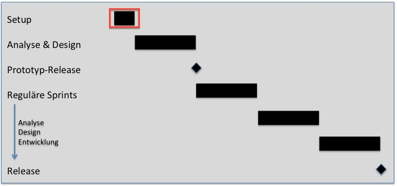

During Project Initialisation some basic decisions have to be made and some basic tasks must be fulfilled:
-
The project team has to be built. Members of the team are not just the analysts, designer and
developer, but also anyone who is allowed to define or review requirements. This point is important
as the complete communication about the requirements must be documented in this system.
-
The configuration of the scenario has to be made Within this configuration
some important decisions about the structure of the scenario vision and the physical and logical
data model are made.
-
In a concise Scenario Vision the main targets and surrounding conditions are documented.